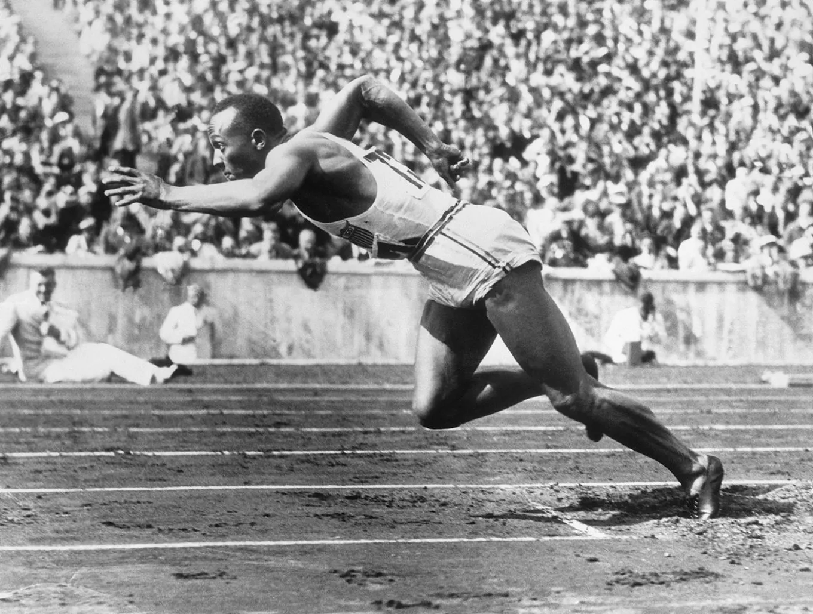

Історія бренду ADIDAS
Про шлях Adidas до світової слави в 1930-і роки, боротьбу з конкурентами, перестановки в менеджменті, контракти зі спортсменами та музикантами та нові розробки компанії.
Adidas - одна з небагатьох компаній, які не лише допомогли створити нову галузь, але й існують досі, залишаючись на лідерських позиціях. Історія Adidas розпочалася у середині 1920-х років. Бренд довго вважався номером один на ринку екіпірування, але тепер, програвши конкуренцію Nike, докладає всіх зусиль, щоб повернутися на вершину.
Витоки створення Adidas. Компанія Gebrüder Dassler
Історія бренду Adidas розпочинається з Адольфа Дасслера. Він народився 1900 року в німецькому місті Херцогенаурах. Батько працював на фабриці з виробництва взуття, а мати чи то була пральня, чи володіла пральною. Адольф був молодшим із чотирьох дітей.
У дитинстві Адольф найближче дружив із братом Рудольфом, старшим за нього на два роки. Обидва захоплювалися спортом і часом жорстко змагалися один з одним. У 1914 році Рудольфа призвали в армію, Адольф почав вивчати справу батька. Ще одним його захопленням став футбол, який на той час якраз набирав популярність у Європі.
Точно невідомо, чи брав участь Адольф Дасслер у Першій світовій війні: відомості з цього приводу суперечливі і залежать від джерела. Враховуючи рік його народження, можна припустити, що якщо він і опинився на фронті, то вже наприкінці війни.
Після закінчення війни умови миру щодо Німеччини були дуже жорсткими, і сімейство Дасслерів опинилося у скрутному становищі. Зневірившись знайти роботу, Адольф задумався про створення власного бізнесу з виробництва взуття. За найпопулярнішою версією, першу майстерню було відкрито у приміщенні колишньої пральні, де працювала мати підприємця.
До знаменитих бутс та іншого екіпірування було, звичайно, ще далеко. Спочатку сімейна мануфактура Дасслер спеціалізувалася на пошитті спальних тапочок. Матеріали брали із списаних армійських запасів. Далі з'явилися гімнастичні капці.
Проте Адольф Дасслер уже тоді вважав, що у майбутньому бізнес має забезпечувати хорошим взуттям спортсменів. У 1924 році було створено компанію Gebrüder Dassler. За найпоширенішою версією це сталося після того, як до бізнесу Дасслера приєднався його брат Рудольф.
Обидва брати вже встигли попрацювати на взуттєвій фабриці, але тепер взяли на себе різні функції. Адольф зайнявся виробництвом, а комунікабельніший і активніший Рудольф почав налагоджувати продажі. На момент створення в компанії працювало вже 14 осіб, включаючи Дасслер.
1925 року Адольф розробив футбольні бутси. Для їхнього виробництва потрібні були шипи — це забезпечив Рудольф, який налагодив партнерство з місцевим ковалем. Втім, є версія, що Адольф домовився про все ще раніше. У будь-якому разі так з'явилися шиповані бутси компанії, які незабаром стали дуже популярними і дозволили братам збільшити оберти. У 1926 році Gebrüder Dassler виробляла більше сотні пар взуття на день. Ще за рік Дасслери змогли дозволити собі оренду фабрики.
Успіх спортивного взуття навів Дасслер на ідею повністю перевести компанію на цей напрям. Зусиллями Адольфа розпочалася розробка взуття для німецьких учасників Олімпіади 1928 року у Амстердамі. Це був реальний початок популярності бренду, чиє спортивне взуття на ті часи вважалося досить зручним. Під час Олімпіади в Лос-Анджелесі 1932 року постачальниками взуття для збірної Німеччини знову стали Дасслери.
Настоящий прорыв произошел в 1936 году, когда обувь Gebrüder Dassler стала стандартом для немецких атлетов. Также ее использовал американский легкоатлет Джесси Оуэнс, ставший четырехкратным олимпийским чемпионом. Перед Олимпиадой Адольф Дасслер сам вел переговоры с Оуэнсом и убедил его выбрать обувь немецкой компании. Для бутс Оуэнса были разработаны специальные шипы.

Так до бренду прийшла світова слава, а продажі всього за рік досягли астрономічного на той час значення — 400 тисяч марок. Компанія почала виробляти близько 1000 пар взуття на день і придбала ще одну фабрику, щоб збільшити виробництво.
У 1939 році, на початку Другої світової війни, у Дасслер відібрали бізнес, хоча вони підтримували правлячу партію. Адольф і Рудольф вирушили на фронт, а заводи були перебудовані під потреби військових. Вийшло недостатньо добре, і за рік Адольфа повернули на батьківщину, щоб він налагодив виробництво взуття для армії. Є версія, що Адольфа зовсім не закликали до армії, щоб він міг керувати своїми фабриками.
Розпад Gebrüder Dassler. Розвиток бренду Adidas
Після закінчення війни фабрики Дасслерів опинилися у зоні американської окупації. Заповзятливі американці змусили Адольфа як виплату контрибуції проводити спортивне екіпірування для США. Сімейний бізнес за роки війни сильно постраждав і після повернення Рудольфа з полону брати змушені були починати майже з нуля, знову закуповуючи списані армійські матеріали.
Незабаром після повернення Рудольфа між братами спалахнула сварка, точні причини якої невідомі. Дехто схильний вважати, що Рудольф був обурений тим, що його молодший брат не використав зв'язку з американцями, щоб скоріше визволити його з полону.
За іншою версією, брати доносили одна на одну окупаційній владі. Вони не дуже ладнали ще до війни: Рудольфу не подобалося прагнення Адольфа постійно вдосконалювати бізнес, а останній був не в захваті від поведінки брата та його зарозумілості.
Як би там не було, доки живий був батько, брати трималися разом. У 1948 році з його смертю стримуючий фактор зник, бренд Dassler був розділений на дві компанії. Рудольф та Адольф вирішили, що ніхто з них не отримає права використовувати ім'я Gebrüder Dassler. Адольф створив компанію Addas, яка пізніше перетвориться на Adidas (від імені Adi Dassler), а його брат стане фундатором бренду Puma. Так розділ німецької компанії дав світу два спортивні бренди.
Брати начебто розійшлися мирно, але відносини між брендами склалися не дуже добрі. Співробітники двох компаній довго ворогували: змагалися у спортивних турнірах; кажуть, що навіть не відправляли дітей до однієї школи з дітьми конкурентів, а під час зустрічі не віталися. Загалом місто Херцогенаурах розділилося на дві частини. 2016 року вийшов присвячений цій ворожнечі фільм — «Дуель двох братів. Історія Adidas та Puma».
Ворожнеча між двома брендами стане для кожного з них важливим етапом становлення та змусить постійно рухатися вперед. Незважаючи на обіцянку не використовувати спільні напрацювання, обидва брати швидко порушили договору. Adidas став використовувати символіку Gebrüder Dassler, розмістивши замість двох ліній три — так компанія Адольфа Дасслера для багатьох людей стала спадкоємцем відомого довоєнного бренду.
Завдяки досвіду Адольфа Дасслера, який раніше займався розробкою нових моделей, Adidas прославилася як компанія, що випускає революційні продукти. Серед найяскравіших винаходів - взуття зі знімними шипами, а також футбольні бутси спеціально для гри взимку.
У 1954 році продукція Adidas покаже себе на Чемпіонаті світу з футболу у Швейцарії. Бутси зі знімними шпильками стали головною зброєю збірної ФРН. У фіналі чемпіонату на стадіоні, що постраждав від дощу, команда здолала збірну Угорщини частково завдяки розробці Адольфа Дасслера, яка дозволила замінити шипи на більш придатні для мокрого газону.
Після перемоги німецької збірної роль взуття в успіху спортсменів була повністю переосмислена. На цьому чемпіонаті збірна Угорщини зустрічалася з ФРН ще на груповому етапі та перемогла з рахунком 8:3, але в негоду важливу роль зіграло екіпірування. Є версія, що Puma впровадила змінні шипи ще раніше, але Adidas почала постачати їх збірній ФРН, а тому захопила і славу, і міжнародний ринок.
У 1950-х років Adidas вже активно працювала на ринку спортивного одягу та інших аксесуарів. 1952 року розпочато випуск спортивних сумок, потім у продажу з'явилися фірмові костюми зі знаменитими трьома смужками, у середині 1960-х до них додалися футбольні м'ячі. Надалі компанія почне випускати спеціальні м'ячі для важливих футбольних подій на зразок Чемпіонату світу.
1956 року в Мельбурні проводилися літні Олімпійські ігри. Adidas, чиє екіпірування і так використовували деякі спортсмени, уклала рекламну угоду з Міжнародним олімпійським комітетом. Син Адольфа Хорст просто надав легкоатлетам взуття компанії, справедливо вирішивши, що це приверне увагу глядачів.
1957 року Адольф Дасслер створив нову революційну розробку — першу модель спортивного взуття з повітряною подушкою. Потім цю технологію скопіювало багато конкурентів, у тому числі і Puma.
Успішний поступ на Олімпіаді та інноваційна продукція дозволили компанії всерйоз взятися за світову експансію. Було відкрито виробництво продукції у Франції та Норвегії. Екіпірування бренду стало чимось на зразок світового стандарту, і вже на наступній олімпіаді більшість спортсменів обрали взуття Adidas.
Надалі Adidas продовжить використовувати великі спортивні події для просування свого екіпірування. Головною такою подією для компанії були Олімпійські ігри: вони дозволяли показати багато продуктів бренду, привертаючи увагу всього світу, а не шанувальників одного конкретного виду спорту. Керівники Adidas вміли правильно вибрати спортсменів для реклами: до середини 1970-х років більшість переможців олімпіад носили взуття Adidas.
1970 року стався знаменитий скандал, викликаний порушенням договору між Рудольфом та Адольфом. Каменем спотикання між братами став бразильський нападник Пеле. Партнерство з ним на Чемпіонаті світу в Мексиці обіцяло і Puma, і Adidas солідну вигоду, але Дасслер пішли на компроміс. Вони уклали «Пакт Пеле», згідно з яким обидва бренди не мали права підписувати договір із футболістом.
Рудольф угоду порушив: Пеле перед початковим свистком фіналу ЧС-1970 попросив у судді дозволу перев'язати шнурівку бутсів, камери попрямували на нього, і мільйони глядачів побачили взуття спортсмена, на якому красувався напис Puma.
У 1971 році до знаменитих трьох смужок Adidas додався ще й трилисник. Новий логотип, відібраний чи не з сотні варіантів, мав символізувати те, що компанія працює у різних напрямках.
У 1972 році компанія Adidas, домовившись із Леонідом Брежнєвим, стала постачальником олімпійського екіпірування для спортсменів радянської збірної. Надалі CCCР набуде декларація про виробництво фірмових бутсів.
До кінця 1970-х років Adidas вважалася світовим лідером на ринку спортивного взуття. Компанія працювала у 150 країнах світу, а її річний оборот становив близько $500 млн. На заводах бренду, розташованих у 24 країнах, вироблялося понад 200 тисяч пар взуття на день. Adidas обирали не лише олімпійські спортсмени та їх шанувальники, а й, наприклад, пілоти Формули-1.
У 1976 році, переглядаючи змагання з бігу на літніх Олімпійських іграх у Монреалі, Адольф Дасслер помітив проблеми із взуттям у кубинського спортсмена Альберто Хуанторена. Він доручив представникам Adidas, які були на Олімпіаді, з'ясувати, в чому причина, щоб не кидати тінь на бренд. Фахівці виявили, що Хуанторена біг у нових кросівках Adidas зі знімними шипами, але самостійно замінив шипи на довші і прогадав. Помилка спортсмена було виправлено, і він виграв дві золоті медалі.
Adidas без Дасслер. Парафія Роберта Луї-Дрейфуса
Світове лідерство Adidas, здавалося б, мало зробити компанію непотоплюваною, але вийшло зовсім інакше. 1978 року Адольф Дасслер — головний мрійник бренду, який забезпечив йому 800 патентів, — помер.
П'ять років компанію очолювала дружина підприємця Катаріна Дасслер, яка раніше тривалий час керувала щоденною роботою. Помітна роль залишалася за сином засновника Хорстом Дасслером, який керував французькою філією, а також, як і раніше, вів переговори з різними комітетами та федераціями та займався маркетингом.
І все-таки зі смертю Адольфа Дасслера Adidas поступово занепадала. Деякі джерела вважають, що виною всьому були сімейні чвари і бажання поділити спадщину. Навіть якщо вони неправі, у компанії все одно з'явилися б проблеми. На ринок спортивного екіпірування, який і був цілком конкурентним, входили американські бренди на кшталт Nike та Reebok. Adidas, яка втратила свого головного інноватора і звикла до становища лідера, не змогла швидко відреагувати на жорсткіші умови.
До кінця 1980-х років компанія ще зберігала свої позиції на європейському ринку та залишалася світовим лідером. У США її потіснила із позицій Nike. 1985 року померла Катаріна Дасслер, а ще через два роки — Хорст Дасслер. Так компанія виявилася обезголовлена.
До влади прийшли доньки Адольфа Дасслера, які мало того, що не були ефективними керівниками, але ще й, за чутками, встигли пересваритися між собою. Зрештою було досягнуто компромісу, і в 1989 році спадкоємиці прийняли рішення продати 80% компанії. Покупцем став французький підприємець і політик, власник футбольної команди Бернар Тапі, якому угода коштувала 1,6 млрд франків. Щоб купити компанію, він залучив кредитні гроші.
Тапі збирався повернути компанію на вершину, але це йому не вдалося. Головні його досягнення - перенесення виробництва в Азію і контракт з Мадонною, що стала однією з осіб бренду. 1992 року у Тапі з'явилися проблеми: він не зміг виплатити кредитні відсотки, і 1993 року банк Credit Lyonnais продав компанію другу Тапі Роберту Луї-Дрейфусу. Дрейфус придбав бренд за набагато більшу суму, ніж його продали дочці Дасслера — 4,4 млрд франків.
Про чергового власника Adidas варто розповісти докладніше. Він народився в багатій сім'ї, закінчив привілейовану школу та Гарвард, а потім трохи попрацював у сімейному конгломераті з торгівлі зерном. Луї-Дрейфус не став обмежуватися великою спадщиною та репутацією гарного гравця в покер — натомість він почав інвестувати в інші компанії. Незабаром він очолив компанію IMS Health, яка проводить фармацевтичні дослідження, до якої вклав близько 400 тисяч доларів. 1988 року її було продано за $1,6 млрд.
Після цього Луї-Дрейфус став керівником рекламної агенції Saatchi&Saatchi. Про цю його діяльність інформації менше, але зазвичай вона також досить позитивна. Загалом, до Adidas прийшла людина, яка досить успішно очолювала кілька компаній і готова була врятувати відомий бренд.
Луї-Дрейфус отримав Adidas у важкому стані, компанія потребувала рішучих дій, і новий директор найняв у керівництво бренду колишніх топ-менеджерів та дизайнерів Nike та Reebok. Також Луї-Дрейфус завершив перенесення виробництва до Азії, постаравшись усіляко зменшити витрати, і водночас збільшив рекламний бюджет та приготувався до запуску фірмових магазинів бренду.
У 1994 Adidas представила футбольні бутси Predator, створені Крейгом Джонстоном. Пророблена рекламна кампанія зробила модель одним із найпопулярніших брендів. Загальний успіх цієї лінійки дозволив їй проіснувати до 2015 року. У найкращі часи у взутті Adidas Predator грали Зінедін Зідан, Девід Бекхем та інші відомі футболісти.
В 1994 Adidas стала спонсором футбольного Чемпіонату світу в США. Під керівництвом Луї-Дрейфуса компанія, здавалося б, поступово повертала собі втрачені позиції і перетворювалася на колишню Adidas — із чудовою продукцією та найкращими спортсменами, які її представляли.
У 1995 році компанія стала публічною, що допомогло їй нарешті покінчити з боргами. Успіх серії Predator дозволив створити турнір Adidas Predator, покликаний відкривати юні футбольні обдарування.
У 1996 році Adidas забезпечує спортивне екіпірування для Олімпійських ігор збірні 33 країн і близько 6 тисяч спортсменів. Це була чудова демонстрація відродження бренду. Продаж зріс на 50% — багато в чому, звичайно, завдяки змаганням.
У 1997 році відбувається знамените поглинання французького гурту Salomon Sports, який спеціалізується на виробництві екіпірування для зимових видів спорту. Після цієї покупки компанія змінила назву Adidas-Salomon. Нове придбання досить швидко окупилося.
Вже 1997 року Salomon представила Snowblades – особливий вид надкоротких лиж. У цей час компанія відмовилася від орієнтації на класичні види спорту і стала звертати увагу на вуличний спорт. До складу Salomon входив один із провідних виробників ключок для гольфу – компанія Taylor Made.
Так само Adidas отримала контроль над Mavic — одним із лідерів на ринку велосипедного спорту. Це дозволило компанії нарешті випередити Reebok і стати другим у світі виробником спортивних товарів, але Nike залишалася практично недосяжною.
Незважаючи на оптимістичні прогнози, інтеграція Salomon пройшла не так легко, як передбачалося. Становище бренду ускладнило ще й падіння продажів у Росії та Азії, що позначилося на прибутку. Проте компанія зміцнилася на ринку США, який після його захоплення Nike був для Adidas практично закритий.
Проте компанія розширювалася і продовжувала спонсорувати відомі спортивні змагання та спортсменів. На футбольному Чемпіонаті світу у 1998 році Adidas була одночасно офіційним спонсором змагання та технічним спонсором збірної Франції, яка й виграла цей турнір. Її виручка тоді склала майже 7,9 млрд. марок.
Герберт Хайнер на чолі Adidas. Компанія у XXI столітті
Під керівництвом Луї-Дрейфуса бренд значно зміцнив позиції і вперше після доби Адольфа Дасслера став претендувати на повернення світового лідерства. 2001 року Луї-Дрейфус подав у відставку, але, на відміну від Дасслерів, підготував собі заміну: місце генерального директора зайняв Герберт Хайнер.
Хайнер з дитинства захоплювався спортом та особливо футболом. У професійного футболіста він не виріс, але чудово розбирався у цій сфері та розумів, яку роль відіграла Adidas у розвитку спорту.
Хайнер насамперед довів до кінця створення підрозділу Adidas Sport Heritage, який почав виробляти повсякденний одяг. Любителі спорту також не залишилися поза увагою: для них було створено новаторський напрямок Adidas Perfomance.
Провівши часткову реструктуризацію, Хайнер почав планувати захоплення ринку, на якому компанія найсильніше поступалася Nike, — США. Хайнер не переставав працювати і в інших напрямках. У 2004 році було створено спільне підприємство Adidas та британського дизайнера Стеллу Маккартні — воно мало допомогти просувати і збільшити асортимент продукції. Ця лінійка, яка орієнтована на жінок, існує і зараз.
У цьому ж році була випущена лінія одягу Respect M.E., створена за співпраці Adidas зі співачкою Міссі Елліотт. Надалі до бренду Adidas приєднаються ще кілька знаменитостей, які не мають відношення до спорту. Найгучнішим придбанням Adidas на цій ниві став репер і продюсер Каньє Вест, що пішов з Nike. Крім того, у 2014 році стало відомо про співпрацю компанії з музикантом Снупом Доггом. Колекції відомих музикантів та дизайнерів дозволили бренду зміцнити становище на ринку повсякденного одягу.
Особливе місце у діяльності компанії у середині 2000-х років займали судові розгляди щодо використання символіки Adidas у колекціях інших брендів. У 2003 році за це потрапила під суд компанія Fitness World Trading, яка використовувала у своєму одязі дві білі лінії, схожі на аналогічні три Adidas.
Далі були C&A, Dolce&Gabbana, Wal-Mart та ціла низка інших компаній. Головним звинуваченням було використання все того ж фірмового знаку Adidas із трьох смуг. Не всі позови вдалося виграти, а багато з них бренди взагалі вирішували поза судом. Судитися з приводу товарних знаків Adidas продовжує і зараз: у 2015 році було подано позов на Marc by Marc Jacobs.
Однією з найрезонансніших історій став судовий розгляд із Федерацією тенісу Великобританії: та намагалася змусити Adidas зменшити емблему зі знаменитими смужками на формі учасників Вімблдону. У суді було доведено, що компанія просто не встигне цього зробити, і Adidas виграла справу.
Втім, і Adidas подають позови інші компанії. У 2012 році представники Nike визнали, що модель кросівок конкурента, представлена перед Олімпіадою, створена з використанням їхньої запатентованої технології Flycknit. Довгих розглядів, на які можна було б очікувати, не сталося: Adidas досить скоро довела в суді, що порушення патенту не було.
У 2005 році Adidas продала Salomon: причиною стали збитки підрозділу та прагнення сконцентруватися на головних напрямках. Хайнер назвав покупку французького виробника помилкою. Цього ж року Adidas за $3,8 млрд купила свого конкурента Reebok: очікувалося, що це дозволить наростити свою присутність у США. Частка дійсно збільшилася, але Nike наздогнати не вдалося. Більше того, далася взнаки різниця між Adidas і Reebok у світогляді та напрямі роботи.
Надалі переваги від покупки Reebok стануть менш очевидними. У 2012 році почнеться масове обговорення того, що Reebok приносить Adidas збитки, а потім будуть чутки про можливий продаж бренду. Ще одним гучним придбанням Adidas став бренд Five Ten – виробник спортивного взуття. Сума угоди становила $25 млн.
Для захоплення американського ринку Adidas використала не лише співпрацю з реперами та купівлю Reebok — були й інші підходи. Компанія виступала одним із спонсорів НБА та НФЛ. Контракт з НБА був підписаний у 2006 році як наслідок покупки Reebok: перш ніж увійти до складу Adidas, компанія була головним виробником екіпірування для баскетбольної ліги.
У 2015 році стало відомо, що Adidas не має наміру продовжувати контракт з НБА, що закінчується в 2017 році, і її охоче замінила Nike з угодою на $1 млрд. Більшість джерел сходиться на тому, що Adidas заради вигоди просто переключиться з усієї ліги на окремих спортсменів.
Щодо НФЛ, то її офіційним спонсором була Reebok, яка уклала договір у 2000 році. 2012 року її замінив Nike. Adidas, як і у випадку з НБА, відповіла укладанням контракту із зірками НФЛ.
У 2004 році Adidas уклала контракт із MLS - лігою європейського футболу в США. У 2010 році угода була продовжена до 2018 року. У США німецька компанія залишається провідним виробником екіпіровки для футбольних команд. Компанія займалася не лише формою, а й глобальними програмами на кшталт Generation Adidas – фінансовою підтримкою клубів, які залучають молодих гравців.
У 2015 році Adidas уклала контракт ще й із НХЛ. Як і з іншими лігами, попереднім її спонсором була Reebok.
На європейському ринку компанія має сильні позиції у футболі. Adidas уклала контракти з Ліонелем Мессі, Полем Погба, Месутом Озілом та безліччю інших відомих гравців. Правда, Nike на цій ниві не відстає від конкурента, і збірна його гравців виглядає не гірше.
Бренди не припиняють конкурувати на цьому ринку. Всім відомий випадок, коли Adidas в обхід Nike уклала рекордний контракт з Манчестер Юнайтед, а Nike відповіла вигіднішою пропозицією до Челсі. У результаті лондонський клуб розірвав контракт із Adidas.
У 2016 році стало відомо, що Adidas домовився про умови рекордного контракту з мадридським Реалом, який принесе футбольному клубу 1,4 млрд євро за 10 років. На футбольному ринку Adidas, як і раніше, випереджає Nike, хоча американський бренд робить все можливе, щоб виправити ситуацію. У той же час позиції Nike як світового лідера поки що виглядають непохитними.
Часто можна зустріти думку, що Adidas та Nike працюють для різних категорій: Nike більше орієнтується на інноваційні технології та оригінальний дизайн, а Adidas має сильні позиції на ринку вуличного одягу та більш класичних моделей взуття та екіпірування. Німецька компанія має навіть спеціальну серію Consortium, яка перезапускає класичні моделі з урахуванням сучасних тенденцій.
Втім, і технологічні інновації бренду не далекі. Наприклад, у 2005 році були випущені кросівки Adidas 1 із впровадженим мікропроцесором — їх позиціонували як перше у світі «розумне» взуття. Також компанія запустила програму з геолокацією для резерву взуття лімітованих серій.
Це була не перша програма, розроблена Adidas: у 2013 році вийшов сервіс Snapshot, який вимірює швидкість та інші параметри польоту м'яча. В 2015 Adidas придбала компанію Runtastic, яка спеціалізується на розробці фітнес-додатків. Угода коштувала $240 млн.
Adidas - один із найдорожчих брендів в історії. Німецька компанія внесла масу нових рішень у розробку спортивного екіпірування. Довгий час колишня лідером ринку, вона втратила позиції лише через відсутність нового талановитого керівника та впевненість у своїй перевагі.
Поступившись лідерство Nike, Adidas не розвалилася повністю, як прогнозували деякі скептики. Під керівництвом людей з боку — не з родини Дасслерів — компанія почала повертати свої позиції, намагаючись перемогти Nike. Чим закінчиться ця дуель, неясно, але в будь-якому разі конкуренція між брендами на руку клієнтам, які отримують справді якісну продукцію.